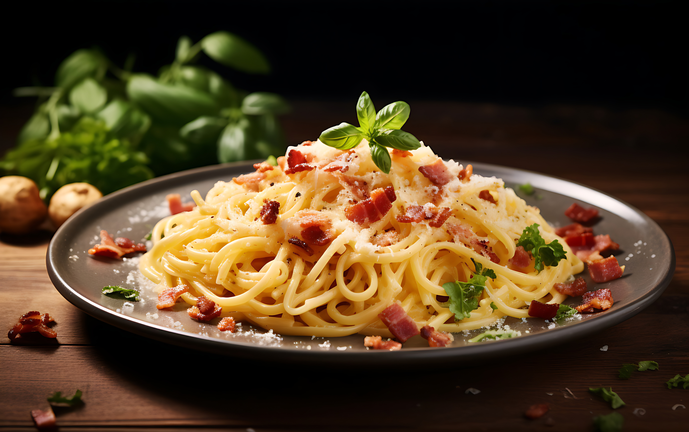

Home
Carbonara

Description
Carbonara is a classic Italian pasta dish made with eggs, cheese, pancetta or guanciale, and black pepper. It's a creamy and rich dish that's quick to prepare.
This recipe combines simple ingredients to create a flavorful meal that's perfect for any occasion. Enjoy the authentic taste of Italy in your own kitchen!
Ingredients
- Spaghetti
- Eggs
- Pancetta or guanciale
- Parmesan cheese
Steps
- Cook spaghetti according to package instructions.
- In a bowl, whisk together eggs and grated Parmesan cheese.
- In a pan, cook pancetta or guanciale until crispy.
- Drain spaghetti and add to the pan with pancetta. Remove from heat.
- Quickly mix in the egg and cheese mixture, stirring vigorously to create a creamy sauce.
- Serve immediately with extra Parmesan cheese on top.